Identify Volumes, Instances & Security Groups on the MOC that need to be Migrated to the NERC
Please read the instructions in their entirety before proceeding. Allow yourself enough time to complete them.
Volume Snapshots will not be migrated. If you have a Snapshot you wish to backup please “Create Volume” from it first.
Confirm Access and Login to MOC Dashboard
- Go to the MOC Dashboard.
SSO / Google Login
-
If you have SSO through your Institution or google select Institution Account from the dropdown.
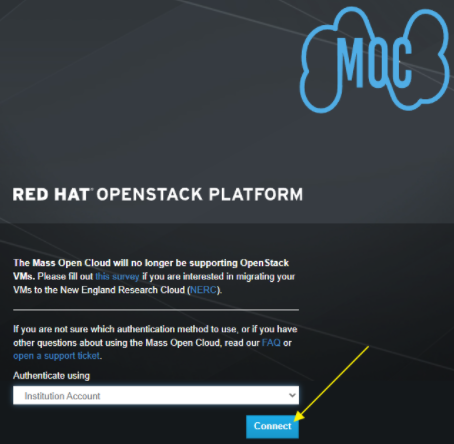
-
Click Connect.
-
Click on University Logins (highlighted in yellow below) if you are using SSO with your Institution.
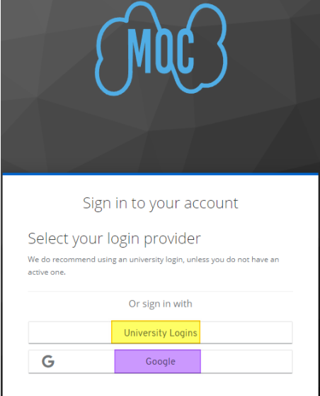
- Follow your Institution's login steps after that, and skip to Gathering MOC information for the Migration.
-
Click Google (highlighted in purple above) if your SSO is through Google.
- Follow standard Google login steps to get in this way, and skip to Gathering MOC information for the Migration.
Keystone Credentials
-
If you have a standard login and password leave the dropdown as Keystone Credentials.
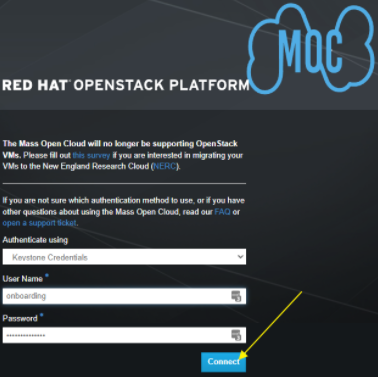
-
Enter your User Name.
-
Enter your Password.
-
Click Connect.
Don't know your login?
-
If you do not know your login information please create a Password Reset ticket.
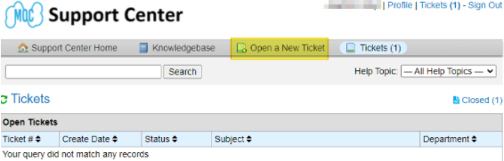
-
Click Open a New Ticket (highlighted in yellow above).
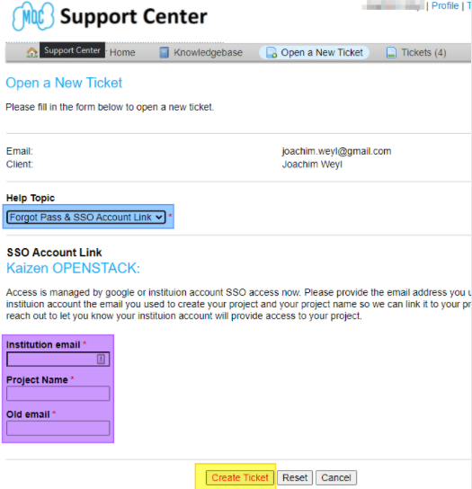
-
Click the dropdown and select Forgot Pass & SSO Account Link (highlighted in blue above).
-
In the text field (highlighted in purple above) provide the Institution email, project you are working on and the email address you used to create the account.
-
Click Create Ticket (highlighted in yellow above) and wait for the pinwheel.
-
You will receive an email to let you know that the MOC support staff will get back to you.
Gathering MOC information for the Migration
-
You are then brought to the Project>Compute>Overview location of the Dashboard.
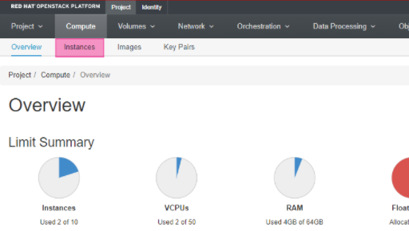
Create Tables to hold your information
Create 3 tables of all of your Instances, your Volumes and Security Groups, for example, if you have 2 instances, 3 volumes and 2 Security Groups like the samples below your lists might look like this:
MOC Instance Information Table
| Instance Name | MOC VCPUs | MOC Disk | MOC RAM | MOC UUID |
|---|---|---|---|---|
| Fedora_test | 1 | 10GB | 1GB | 16a1bfc2-8c90-4361-8c13-64ab40bb6207 |
| Ubuntu_Test | 1 | 10GB | 2GB | 6a40079a-59f7-407c-9e66-23bc5b749a95 |
| total | 2 | 20GB | 3GB |
MOC Volume Information Table
| MOC Volume Name | MOC Disk | MOC Attached To | Bootable | MOC UUID | NERC Volume Name |
|---|---|---|---|---|---|
| Fedora | 10GiB | Fedora_test | Yes | ea45c20b-434a-4c41-8bc6-f48256fc76a8 | |
| 9c73295d-fdfa-4544-b8b8-a876cc0a1e86 | 10GiB | Ubuntu_Test | Yes | 9c73295d-fdfa-4544-b8b8-a876cc0a1e86 | |
| Snapshot of Fed_Test | 10GiB | Fedora_test | No | ea45c20b-434a-4c41-8bc6-f48256fc76a8 | |
| total | 30GiB |
MOC Security Group Information Table
| Security Group Name | Direction | Ether Type | IP Protocol | Port Range | Remote IP Prefix |
|---|---|---|---|---|---|
| ssh_only_test | Ingress | IPv4 | TCP | 22 | 0.0.0.0/0 |
| ping_only_test | Ingress | IPv4 | ICMP | Any | 0.0.0.0/0 |
Gather the Instance Information
Gather the Instance UUIDs (of only the instances that you need to migrate to the NERC).
-
Click Instances (highlighted in pink in image above)
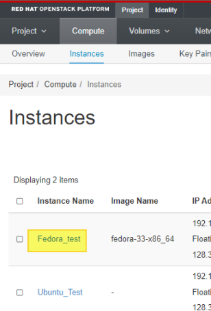
-
Click the Instance Name (highlighted in Yellow above) of the first instance you would like to gather data on.
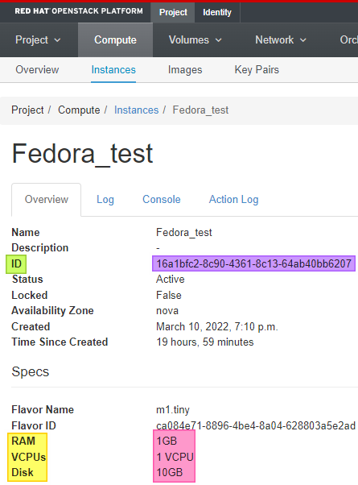
-
Locate the ID row (highlighted in green above) and copy and save the ID (highlighted in purple above).
- This is the UUID of your first Instance.
-
Locate the RAM, VCPUs & Disk rows (highlighted in yellow) and copy and save the associated values (highlighted in pink).
-
Repeat this section for each Instance you have.
Gather the Volume Information
Gather the Volume UUIDs (of only the volumes that you need to migrate to the NERC).
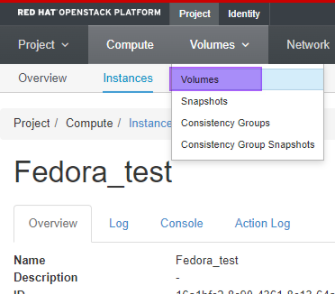
-
Click Volumes dropdown.
-
Select Volumes (highlighted in purple above).
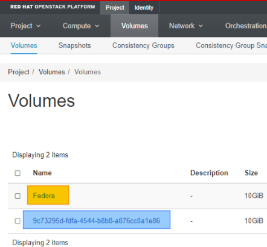
-
Click the Volume Name (highlighted in yellow above) of the first volume you would like to gather data on.
-
The name might be the same as the ID (highlighted in blue above).
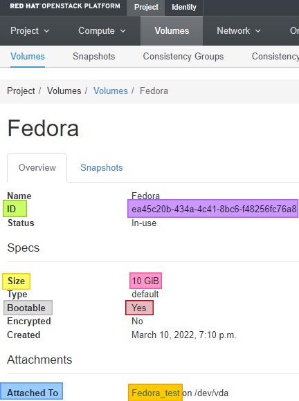
-
-
Locate the ID row (highlighted in green above) and copy and save the ID (highlighted in purple above).
- This is the UUID of your first Volume.
-
Locate the Size row (highlighted in yellow above) and copy and save the Volume size (highlighted in pink above).
-
Locate the Bootable row (highlighted in gray above) and copy and save the Volume size (highlighted in red above).
-
Locate the Attached To row (highlighted in blue above) and copy and save the Instance this Volume is attached to (highlighted in orange above).
- If the volume is not attached to an image it will state “Not attached”.
-
Repeat this section for each Volume you have.
Gather your Security Group Information
If you already have all of your Security Group information outside of the OpenStack Dashboard skip to the section.
Gather the Security Group information (of only the security groups that you need to migrate to the NERC).
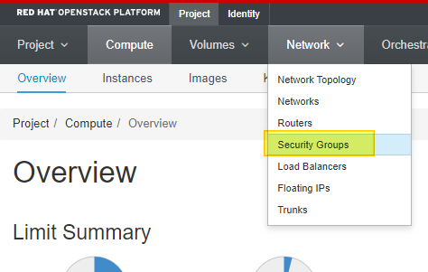
-
Click Network dropdown
-
Click Security Groups (highlighted in yellow above).
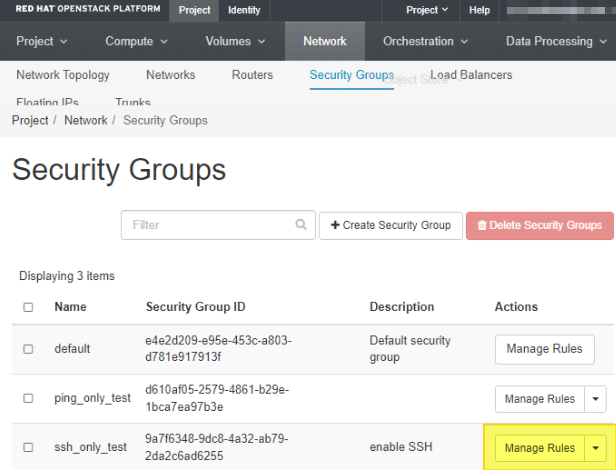
-
Click Manage Rules (highlighted in yellow above) of the first Security Group you would like to gather data on.
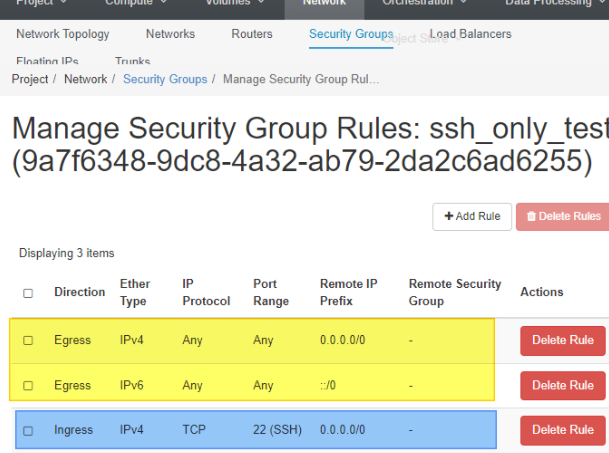
-
Ignore the first 2 lines (highlighted in yellow above).
-
Write down the important information for all lines after (highlighted in blue above).
- Direction, Ether Type, IP Protocol, Port Range, Remote IP Prefix, Remote Security Group.
-
Repeat this section for each security group you have.